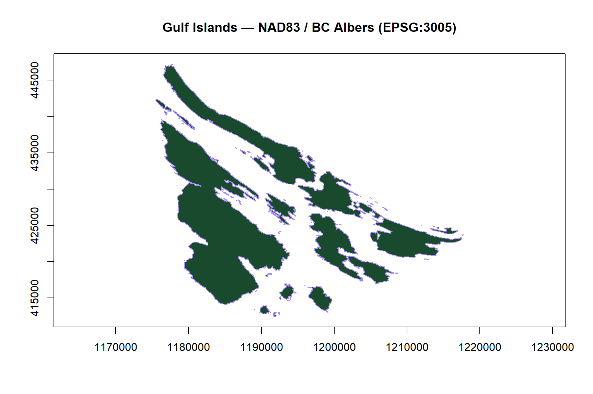
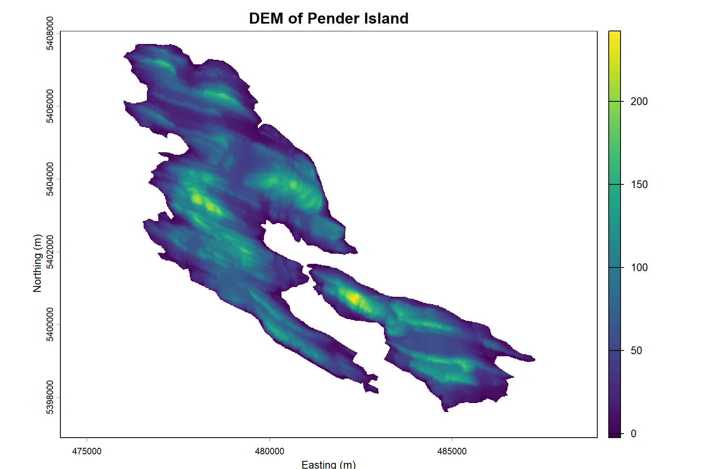
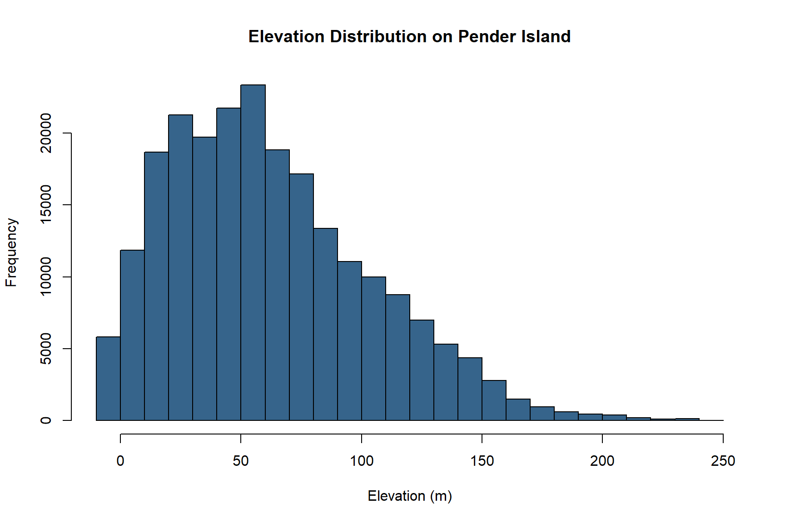
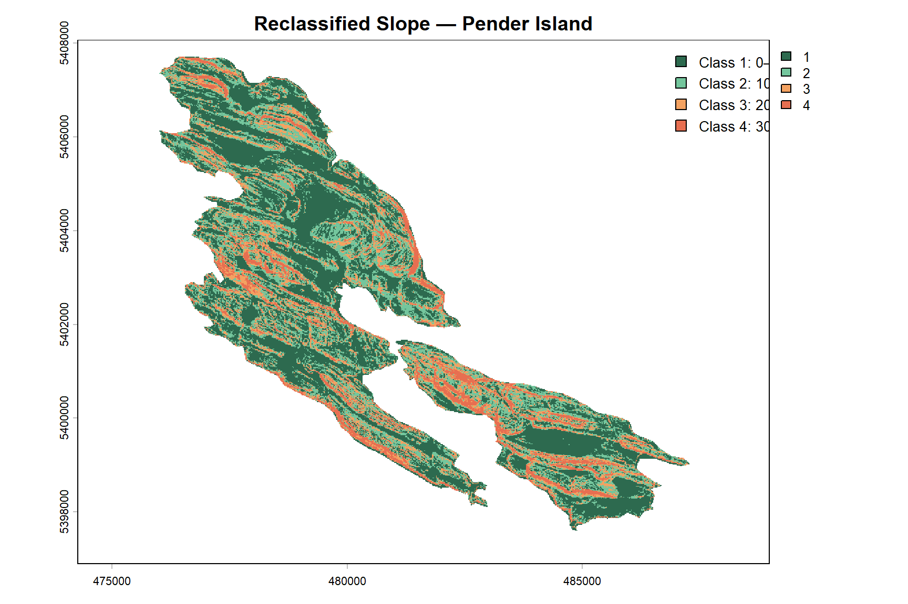
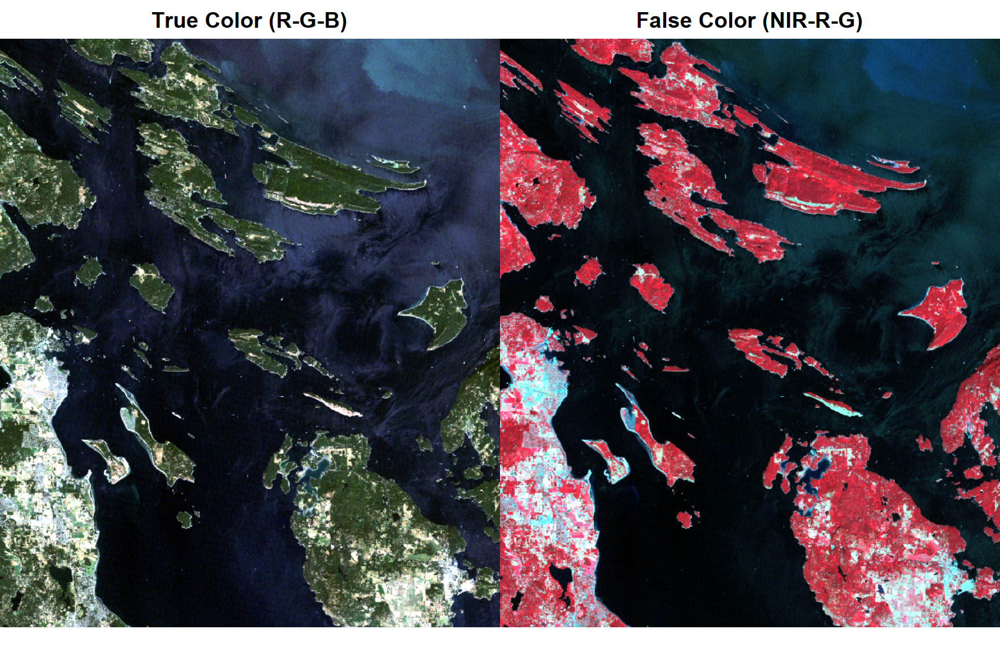
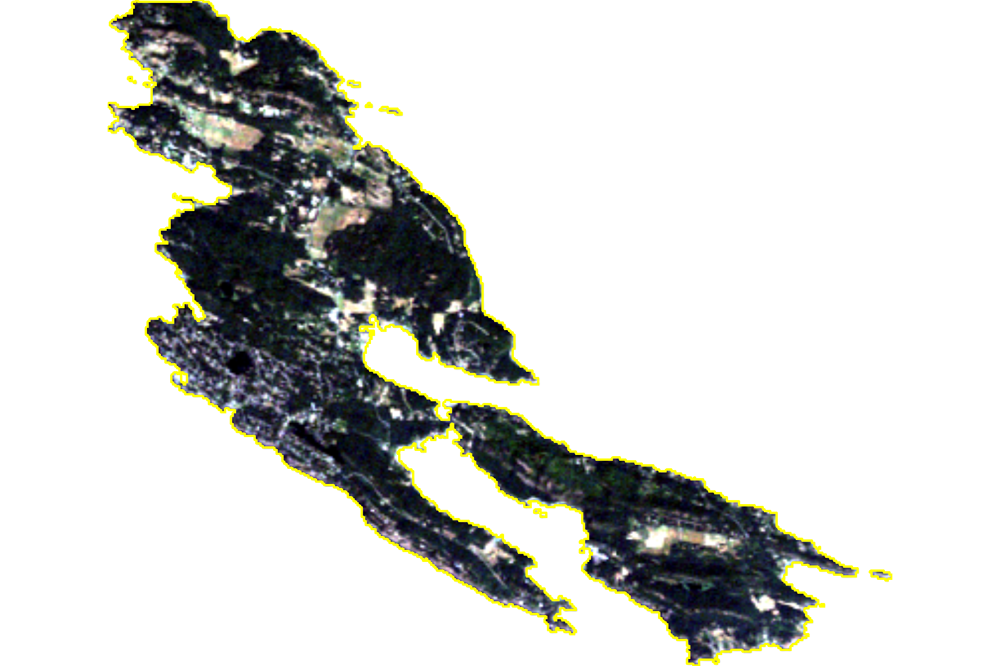
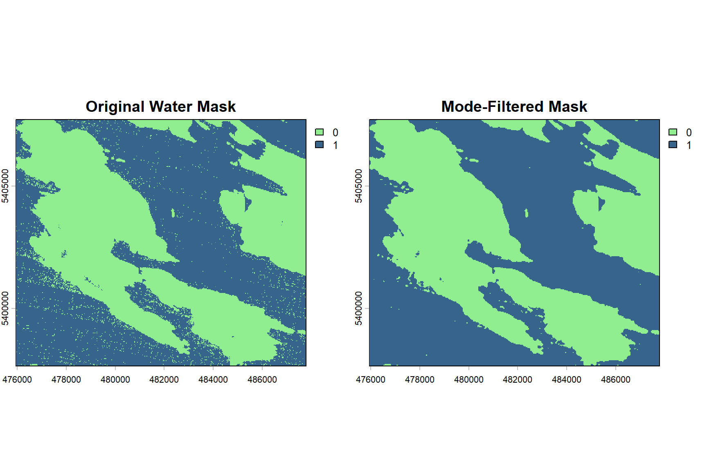
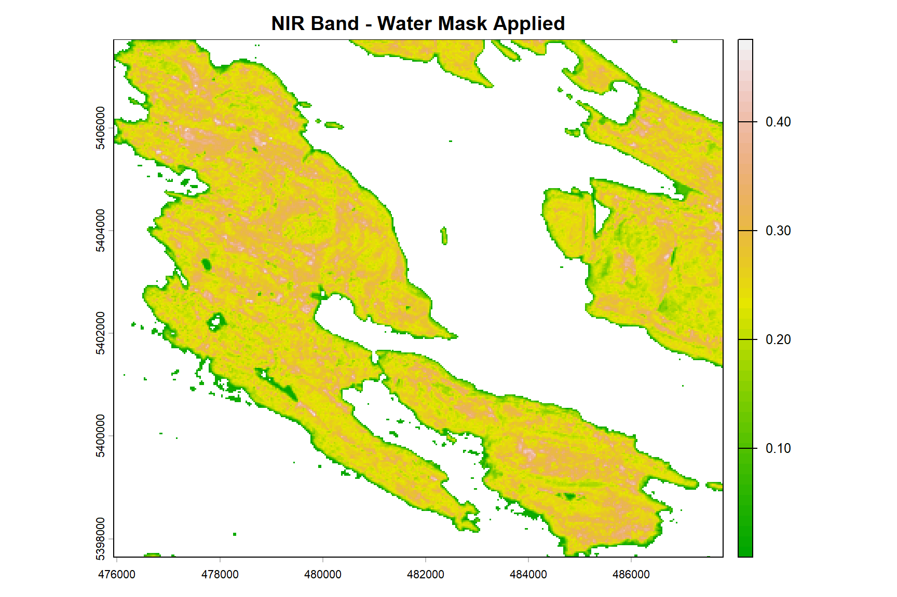
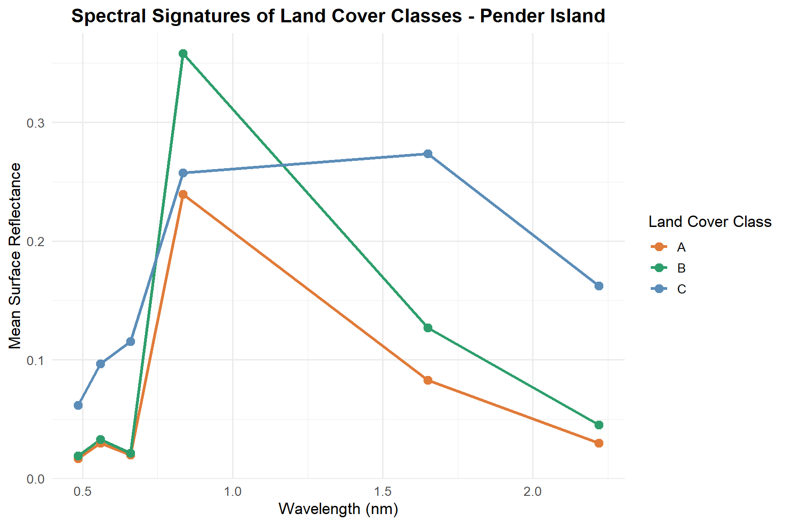

Spatial Data Analysis of the Gulf Islands
Vector Geoprocessing, LiDAR Terrain Analysis, and Landsat Spectral Signature Characterization on Pender Island, British Columbia
Project Overview
This project demonstrates a multi-part geospatial workflow applied to the Gulf Islands of British Columbia, integrating vector geoprocessing, LiDAR-derived terrain analysis, and multispectral remote sensing. The study area — the Southern Gulf Islands archipelago and Pender Island specifically — provides a rich and spatially complex landscape for exploring the complementary strengths of different spatial data types.
The analysis is organized into three parts:
Gulf Islands vector analysis — The island polygon dataset is explored and reprojected, ferry terminal locations are spatially joined to island boundaries, and distances between terminals are computed.
Pender Island terrain analysis — A LiDAR-derived digital elevation model (DEM) is used to characterize island topography through summary statistics, slope derivation, and slope reclassification.
Landsat spectral analysis — A Landsat 5 TM image of the Gulf Islands is used to compute a water mask via NDWI, mask land-based pixels, and characterize the spectral signatures of three land cover classes on Pender Island.
Data Sources
| Dataset | Description | Source |
|---|---|---|
islands_polygons.shp |
Boundary polygons of the Gulf Islands | BC Data |
ferry_terminals.shp |
Ferry terminal point locations | BC Data |
pender_island_dtm.tif |
LiDAR-derived DEM of Pender Island (1 m) | LidarBC Open Portal |
LT05_L2SP_20060723_GulfIslands.tif |
Landsat 5 TM surface reflectance, July 2006 | USGS Earth Explorer |
ROI_pender_island.shp |
Land cover ROI polygons on Pender Island | Field-delineated |
Packages
library(terra) # Raster data processing
library(sf) # Vector data handling
library(tidyverse) # Data manipulation and visualizationPart 1: Gulf Islands Vector Analysis
Island Boundaries and Coordinate Reprojection
The Gulf Islands polygon dataset contains boundaries for 209 islands. The original CRS (WGS84 geographic coordinates) is reprojected to NAD83 / BC Albers (EPSG:3005), the standard projected CRS for BC, to enable accurate area and distance calculations in metres.
# Loading island polygons
islands <- sf::st_read(islands_path, quiet = TRUE)
# Reprojecting to NAD83 / BC Albers (EPSG:3005)
islands_proj <- sf::st_transform(islands, crs = 3005)
# Plotting projected geometry with axes
plot(sf::st_geometry(islands_proj),
axes = TRUE,
main = "Gulf Islands — NAD83 / BC Albers (EPSG:3005)",
col = "#1a4a2e",
border = "#a78bfa")
The dataset contains 209 island features across 3 attribute columns (Island_ID, SLNDTP, GNSNM1).
Ferry Terminal Spatial Join
Six ferry terminals serve the Gulf Islands region. A spatial join identifies which islands host a terminal, and their areas are computed in the projected CRS.
# Loading ferry terminals
ferry <- sf::st_read(ferry_path, quiet = TRUE)
# Inner spatial join: islands that contain a ferry terminal
islands_ferry <- sf::st_join(islands_proj, ferry, left = FALSE) %>%
dplyr::mutate(area = sf::st_area(geometry))
# Largest island with a ferry terminal
largest_island <- islands_ferry %>% dplyr::slice_max(area, n = 1)| Island | Ferry Terminal | Area (ha) | |
|---|---|---|---|
| 38 | Mayne Island | Village Bay Ferry Terminal | 2336.1 |
| 47 | Galiano Island | Sturdies Bay Ferry Terminal | 5815.0 |
| 98 | Saturna Island | Lyall Harbour Ferry Terminal | 3224.8 |
| 145 | Saltspring Island | Long Harbour Ferry Terminal | 18549.1 |
| 183 | North Pender Island | Otter Bay Ferry Terminal | 2708.6 |
The largest island in the dataset is Saltspring Island, with an area of approximately 1.8549^{4} ha.
Distances from Tsawwassen Ferry Terminal
# Separating Tsawwassen and island terminals
tsawwassen_ferry <- ferry %>% dplyr::filter(TRMNL_NM == "Tsawwassen Ferry Terminal")
other_ferry <- ferry %>% dplyr::filter(TRMNL_NM != "Tsawwassen Ferry Terminal")
# Computing distances
distance_table <- other_ferry %>%
dplyr::mutate(
distance_km = round(
as.numeric(sf::st_distance(tsawwassen_ferry, ., by_element = FALSE)) / 1000, 1
)
) %>%
sf::st_drop_geometry() %>%
dplyr::select(TRMNL_NM, distance_km) %>%
dplyr::rename(`Ferry Terminal` = TRMNL_NM, `Distance from Tsawwassen (km)` = distance_km)
knitr::kable(distance_table,
caption = "Straight-line distances from Tsawwassen Ferry Terminal to Gulf Island terminals.")| Ferry Terminal | Distance from Tsawwassen (km) |
|---|---|
| Village Bay Ferry Terminal | 22.8 |
| Otter Bay Ferry Terminal | 26.6 |
| Lyall Harbour Ferry Terminal | 23.8 |
| Sturdies Bay Ferry Terminal | 19.8 |
| Long Harbour Ferry Terminal | 28.9 |
Part 2: Pender Island Terrain Analysis
Digital Elevation Model
The LiDAR-derived DEM provides bare-earth elevation at 1 m resolution across North and South Pender Island. Summary statistics and the elevation distribution are examined to characterize island topography.
# Loading the DEM
pender_dtm <- terra::rast(pender_dtm_path)
names(pender_dtm) <- "elevation"
# Plotting the DEM
plot(pender_dtm,
main = "DEM of Pender Island",
xlab = "Easting (m)",
ylab = "Northing (m)")
# Summary statistics helper
my_summary_stats <- function(x) {
c(max = max(x, na.rm = TRUE),
min = min(x, na.rm = TRUE),
mean = mean(x, na.rm = TRUE),
sd = sd(x, na.rm = TRUE))
}
terra::global(pender_dtm, fun = my_summary_stats) max min mean sd
elevation 242.9722 -2.322638 62.17792 41.75229hist(pender_dtm,
main = "Elevation Distribution on Pender Island",
xlab = "Elevation (m)",
col = "steelblue4")
Slope Derivation and Reclassification
Slope is derived from the DEM and reclassified into four categories to support terrain suitability analysis and land management planning.
# Deriving slope in degrees
pender_slope <- terra::terrain(pender_dtm, v = "slope", unit = "degrees", neighbors = 8)
# Reclassification matrix: from–to–becomes
rcl_matrix <- matrix(
c(0, 10, 1,
10, 20, 2,
20, 30, 3,
30, 90, 4),
ncol = 3, byrow = TRUE
)
slope_rcl <- terra::classify(pender_slope, rcl = rcl_matrix,
include.lowest = TRUE, right = TRUE)
plot(slope_rcl,
main = "Reclassified Slope — Pender Island",
col = c("#2d6a4f", "#74c69d", "#f4a261", "#e76f51"),
axes = TRUE)
legend("topright",
legend = c("Class 1: 0–10°", "Class 2: 10–20°",
"Class 3: 20–30°", "Class 4: 30–90°"),
fill = c("#2d6a4f", "#74c69d", "#f4a261", "#e76f51"),
bty = "n", cex = 0.85)
The majority of Pender Island falls within the gentler slope classes (Class 1 and 2), reflecting the island’s generally low-relief topography. Steeper slopes are concentrated along coastal bluffs and the central ridge.
Part 3: Landsat Spectral Analysis
Multispectral Image Preparation
A Landsat 5 TM surface reflectance image acquired on July 23, 2006 covers the Gulf Islands at 30 m resolution across six spectral bands.
| Band | Name | Wavelength..nm. | Resolution..m. |
|---|---|---|---|
| 1 | Blue | 450–520 | 30 |
| 2 | Green | 520–600 | 30 |
| 3 | Red | 630–690 | 30 |
| 4 | NIR | 770–900 | 30 |
| 5 | SWIR 1 | 1550–1750 | 30 |
| 6 | SWIR 2 | 2090–2350 | 30 |
# Loading Landsat image and naming bands
gulf_ls <- terra::rast(gulf_ls_path)
names(gulf_ls) <- c("blue", "green", "red", "nir", "swir1", "swir2")
# Basic properties
res(gulf_ls)[1] 30 30nlyr(gulf_ls)[1] 6ext(gulf_ls)SpatExtent : 466215, 502035, 5371545, 5413755 (xmin, xmax, ymin, ymax)True and False Color Composites
par(mfrow = c(1, 2))
terra::plotRGB(gulf_ls, r = 3, g = 2, b = 1, stretch = "lin",
main = "True Color (R-G-B)")
terra::plotRGB(gulf_ls, r = 4, g = 3, b = 2, stretch = "lin",
main = "False Color (NIR-R-G)")
par(mfrow = c(1, 1))In the false color composite, vegetation appears in bright red tones because healthy plant canopies have characteristically high reflectance in the NIR band, which is assigned to the red display channel. Water bodies appear dark due to strong NIR absorption.
Cropping and Masking to Pender Island
# Loading Pender Island boundary and reprojecting to match Landsat CRS
pender <- sf::st_read(pender_shp_path, quiet = TRUE) %>%
sf::st_transform(crs = sf::st_crs(gulf_ls))
# Crop to extent, then mask to polygon boundary
pender_ls <- terra::crop(gulf_ls, pender)
pender_ls_masked <- terra::mask(pender_ls, pender)
terra::plotRGB(pender_ls_masked, r = 3, g = 2, b = 1, stretch = "lin",
main = "Pender Island — Masked True Color")
plot(pender$geometry, border = "yellow", lwd = 2, add = TRUE)
Water Masking via NDWI
The Normalized Difference Water Index (NDWI) is used to identify and mask water pixels, preventing mixed-pixel contamination in the spectral signature analysis.
\[NDWI = \frac{GREEN - NIR}{GREEN + NIR}\]
# NDWI function
calc_ndwi <- function(green, nir) (green - nir) / (green + nir)
pender_ndwi <- terra::app(pender_ls, fun = function(x) calc_ndwi(x[2], x[4]))
# Binary water mask (1 = water, 0 = land)
water_mask <- terra::ifel(pender_ndwi > 0, 1, 0)
# Mode filter to smooth isolated misclassified pixels
get_mode <- function(x, na.rm = TRUE) {
if (na.rm) x <- x[!is.na(x)]
ux <- unique(x)
ux[which.max(tabulate(match(x, ux)))]
}
water_mask_mode <- terra::focal(water_mask, w = 3, fun = get_mode)
# Plotting both masks side by side
mask_compare <- c(water_mask, water_mask_mode)
names(mask_compare) <- c("Original Water Mask", "Mode-Filtered Mask")
plot(mask_compare, col = c("lightgreen", "steelblue4"))
Applying the mode filter smooths the binary water mask by replacing each pixel’s value with the most common value in its 3 x 3 neighbourhood. This removes isolated misclassified pixels (salt-and-pepper noise) and produces cleaner, more continuous water and land boundaries, a standard pre-processing step before spectral analysis.
# Applying water mask to Landsat image
pender_ls_mask <- terra::mask(pender_ls, water_mask_mode, maskvalue = 1)
plot(pender_ls_mask[["nir"]],
main = "NIR Band - Water Mask Applied",
col = terrain.colors(50))
Spectral Signature Analysis
Mean reflectance was extracted across three land cover ROIs to characterize their spectral signatures and identify land cover type based on band response patterns.
# Loading ROI polygons
roi_pender <- sf::st_read(roi_path, quiet = TRUE) %>%
tibble::rowid_to_column(var = "ID")
# Extracting mean reflectance per ROI
roi_reflectance <- terra::extract(pender_ls_mask, roi_pender, fun = mean, na.rm = TRUE)
# Joining with land cover labels
lc_reflectance <- dplyr::inner_join(
roi_reflectance,
sf::st_drop_geometry(roi_pender),
by = "ID"
)
# Reshaping to long format
lc_reflectance_long <- lc_reflectance %>%
tidyr::pivot_longer(
cols = c(blue, green, red, nir, swir1, swir2),
names_to = "band",
values_to = "reflectance"
)
# Joining with wavelength data
bands <- read.csv(wavelength_path)
lc_reflectance_long <- dplyr::left_join(lc_reflectance_long, bands, by = "band")
# Plotting spectral signatures
ggplot(lc_reflectance_long,
aes(x = wavelength, y = reflectance, color = lc_class, group = lc_class)) +
geom_line(linewidth = 1.2) +
geom_point(size = 3) +
scale_color_manual(values = c("A" = "#e07b39", "B" = "#2d9e6b", "C" = "#5b8db8")) +
labs(
title = "Spectral Signatures of Land Cover Classes - Pender Island",
x = "Wavelength (nm)",
y = "Mean Surface Reflectance",
color = "Land Cover Class"
) +
theme_minimal(base_size = 13) +
theme(plot.title = element_text(face = "bold", hjust = 0.5))
Land Cover Class Identification
| Class | Spectral Pattern | Identified Land Cover |
|---|---|---|
| A | High visible reflectance, low NIR | Developed areas / exposed soil |
| B | Low visible, sharp NIR increase, steep SWIR decline | Coniferous forest |
| C | Moderate NIR, elevated SWIR reflectance | Broadleaf forest |
Class A shows relatively high and flat reflectance across the visible spectrum with low NIR response, a pattern typical of impervious surfaces, bare soil, or exposed rock, which lack the cellular structure that drives NIR reflectance in vegetation.
Class B exhibits low visible reflectance, a sharp increase in the NIR, and a pronounced decline into the SWIR bands — the classic spectral signature of dense, healthy coniferous forest. The sharp NIR peak reflects high internal leaf scattering, while the SWIR absorption is driven by canopy moisture content.
Class C shows an intermediate NIR response with elevated SWIR reflectance relative to Class B, consistent with broadleaf forest. Broadleaf canopies typically have slightly lower NIR reflectance and higher SWIR compared to dense coniferous stands due to differences in canopy structure, leaf morphology, and moisture content.
Summary
This project demonstrates how vector geoprocessing, LiDAR terrain analysis, and multispectral remote sensing can be combined within a single spatial workflow to characterize a complex island landscape.
The Gulf Islands vector analysis established the spatial framework, identifying which islands are served by ferry and quantifying travel distances from the mainland terminal. The Pender Island DEM analysis revealed a predominantly low-relief topography with steeper slopes concentrated along coastal bluffs, a pattern with direct implications for land use planning and erosion risk assessment. The Landsat spectral analysis successfully distinguished three land cover types based on their reflectance profiles, demonstrating how targeted band combinations and spectral indices can extract ecologically meaningful information from passive optical imagery.
Together, these methods form a practical toolkit applicable to environmental consulting, resource management, and land use planning contexts across coastal British Columbia.